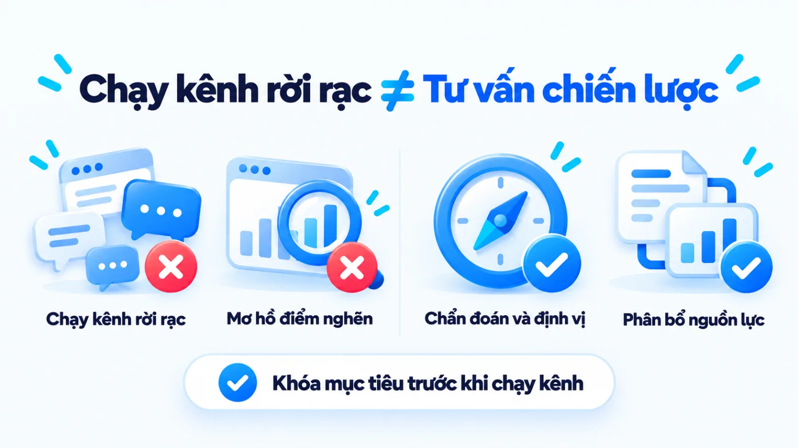
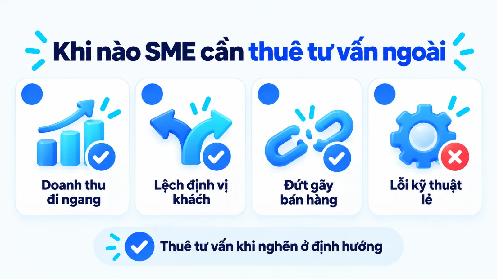
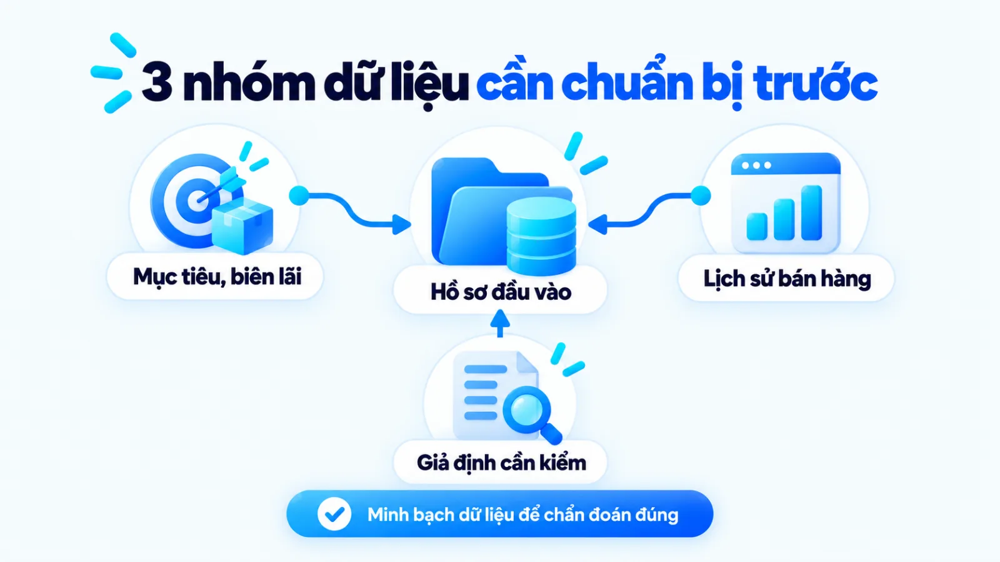
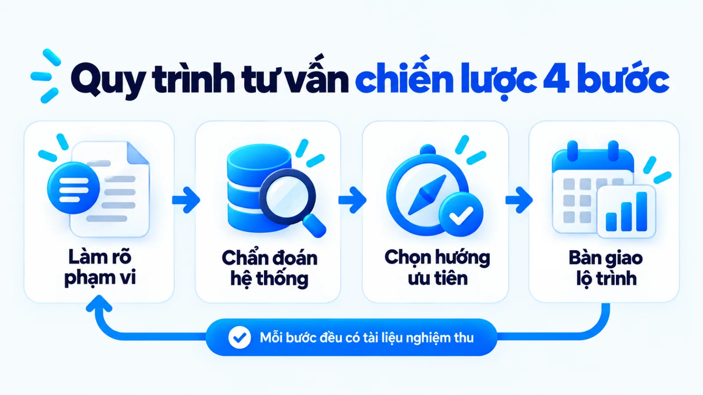
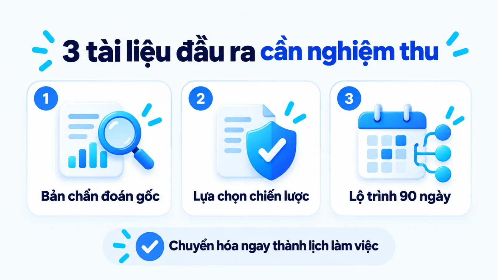
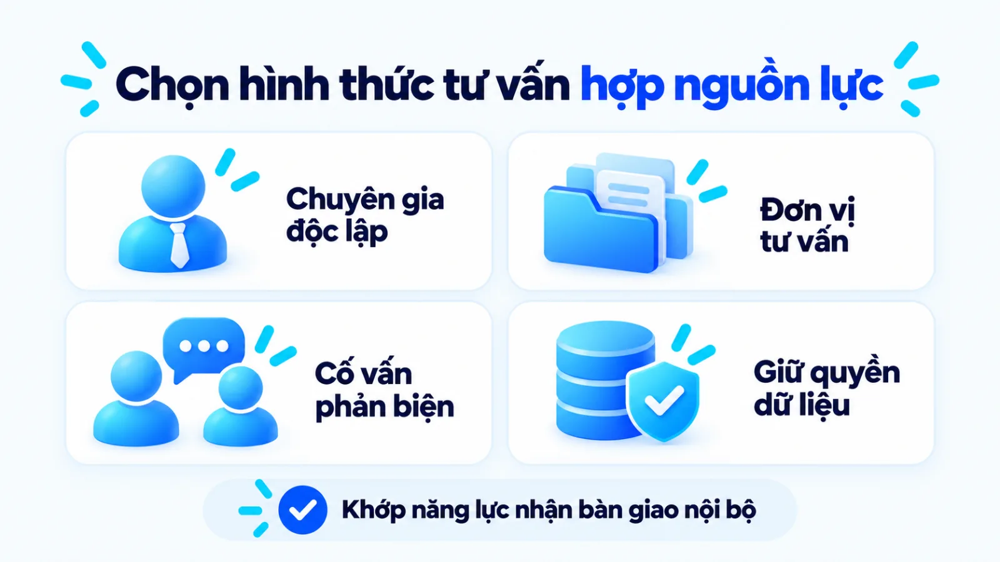
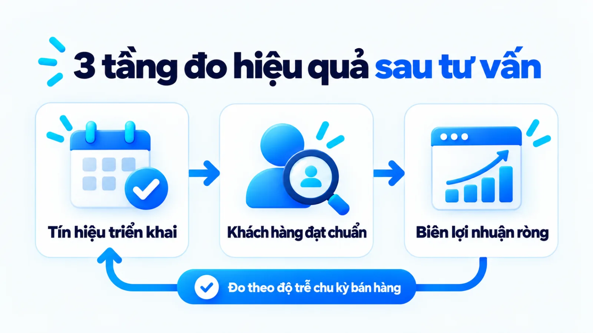

Tư vấn chiến lược marketing là gì, SME cần khi nào
Tư vấn chiến lược marketing là quá trình chẩn đoán điểm nghẽn kinh doanh, phân tích thị trường và xác lập định hướng dài hạn nhằm giúp doanh nghiệp phân bổ nguồn lực vào đúng phân khúc sinh lời. Với doanh nghiệp vừa và nhỏ, khi quảng cáo vẫn chạy đều nhưng chi phí thu hút khách hàng tăng mà doanh thu đi ngang, nút thắt thường nằm ở việc lệch định vị hoặc đứt gãy với khâu bán hàng. Nếu vội đổi đơn vị chạy chiến dịch khi chưa xử lý gốc rễ định hướng, đội ngũ rất dễ tiêu tốn ngân sách vào các hoạt động rời rạc mà không tạo ra lợi thế cạnh tranh. Tôi là Lê Tuấn Việt, Marketing Leader tại TAKI Group. Trong bài viết này, tôi làm rõ ranh giới giữa tư vấn chiến lược với thuê ngoài thực thi, thời điểm cần người chẩn đoán độc lập và cách đánh giá hiệu quả qua từng giai đoạn triển khai.
- Đăng ngày
- Cập nhật

Tóm tắt nhanh
- Tư vấn chiến lược marketing tập trung vào chẩn đoán mô hình tăng trưởng, chọn phân khúc và quyết định những việc không làm, không đồng nhất với việc thuê đơn vị chạy quảng cáo hay sản xuất nội dung lẻ.
- Doanh nghiệp vừa và nhỏ chỉ nên thuê tư vấn khi đã có sản phẩm qua kiểm chứng nhu cầu cơ bản, sẵn sàng chia sẻ dữ liệu kinh doanh thật và có đầu mối nội bộ nhận bàn giao thực thi.
- Một dự án tư vấn đạt chuẩn phải bàn giao đủ ba tài sản vận hành gồm bản chẩn đoán có căn cứ dữ liệu, tài liệu lựa chọn chiến lược kèm sự đánh đổi và lộ trình triển khai gắn với lịch rà soát.
- Hiệu quả sau tư vấn cần được đọc theo ba tầng từ mức độ tuân thủ lộ trình ở ngắn hạn, hành vi khách hàng đạt chuẩn ở trung hạn đến doanh thu và biên lợi nhuận ròng theo chu kỳ bán hàng.
Mục lục bài viết9 phần
Tư vấn chiến lược marketing là gì
Tư vấn chiến lược marketing (marketing strategy consulting) là quá trình chẩn đoán điểm nghẽn kinh doanh, phân tích thị trường và xác lập các lựa chọn định hướng dài hạn để giúp doanh nghiệp phân bổ nguồn lực tạo ra lợi thế cạnh tranh, thay vì chỉ lên lịch đăng bài hay chạy quảng cáo ngắn hạn.
Theo định nghĩa chính thức của American Marketing Association (AMA, Hiệp hội Marketing Hoa Kỳ), marketing là chuỗi hoạt động, thiết chế và quy trình nhằm tạo ra, truyền thông, phân phối và trao đổi các đề xuất có giá trị cho khách hàng, đối tác cùng xã hội. Đặt trong tổng thể đó, hoạt động tư vấn chiến lược không làm thay phần việc sản xuất ấn phẩm hàng ngày, mà giải quyết bài toán gốc rễ: doanh nghiệp chọn phục vụ ai, bằng giá trị cốt lõi nào và phân bổ nguồn lực ra sao để tạo ra giao dịch sinh lời.

Phạm vi từ chẩn đoán đến định hướng triển khai
Trên tạp chí Harvard Business Review năm 1996, Giáo sư Michael E. Porter khẳng định chiến lược cạnh tranh là việc chủ đích lựa chọn một tập hợp hoạt động khác biệt để mang lại tổ hợp giá trị riêng, và bản chất của chiến lược nằm ở việc chọn điều doanh nghiệp quyết định không làm. Vì vậy, phạm vi của tư vấn chiến lược marketing luôn bắt đầu từ khâu mổ xẻ dữ liệu doanh thu, biên lợi nhuận và hành trình mua để tìm ra điểm rò rỉ chuyển đổi trước khi bàn tới công cụ truyền thông.
Nhiều chủ SME (doanh nghiệp vừa và nhỏ) thường nhầm lẫn giữa việc thuê người tối ưu công cụ quảng cáo với việc thuê người giải bài toán định hướng kinh doanh. Để dễ hình dung, hãy xét một ví dụ: một công ty cung cấp dịch vụ kế toán thuế B2B (khách hàng doanh nghiệp) tại Hà Nội đang chạy đồng thời quảng cáo tìm kiếm, mạng xã hội và hội thảo trực tuyến nhưng giá mỗi khách hàng tiềm năng liên tục tăng cao. Nguyên nhân thường do doanh nghiệp chưa phân biệt rõ bản chất marketing là gì so với quảng cáo và bán hàng.
Khi có sự tham gia của người tư vấn chiến lược trong ví dụ này, việc đầu tiên không phải là viết lại mẫu quảng cáo. Nhà tư vấn đối chiếu biên lợi nhuận theo từng nhóm khách để quyết định dừng hẳn các gói dịch vụ lẻ giá thấp, đồng thời dồn nguồn lực vào phân khúc doanh nghiệp mới thành lập cần gói đồng hành trọn năm. Bước lọc theo nhu cầu thực tế này giúp xác định khách hàng mục tiêu khớp với nguồn lực SME.
Điểm khác giữa chiến lược, kế hoạch và thực thi
Sự chồng chéo giữa khái niệm chiến lược, kế hoạch kỳ và dịch vụ thực thi khiến nhiều doanh nghiệp ký hợp đồng thuê ngoài nhưng nhận về đầu ra lệch kỳ vọng. Bảng dưới đây phân biệt bốn hình thức quản trị và hợp tác phổ biến theo phạm vi trách nhiệm, quyền ra quyết định cùng đầu ra bàn giao chính.
| Hình thức | Phạm vi và quyết định | Đầu ra bàn giao chính |
|---|---|---|
| Tư vấn chiến lược | Chẩn đoán điểm nghẽn, chọn phân khúc, định vị và đề xuất phương án đánh đổi nguồn lực | Báo cáo chẩn đoán, khung lựa chọn chiến lược, nguyên tắc phân bổ ngân sách và lộ trình |
| Lập kế hoạch kỳ | Chuyển hóa định hướng đã chốt thành mục tiêu quý, lịch triển khai và dự toán ngân sách | Bảng kế hoạch hành động theo kỳ, phân bổ chỉ tiêu cho từng kênh và lịch kiểm soát |
| Thuê agency thực thi | Triển khai các hạng mục chuyên môn theo yêu cầu như chạy quảng cáo, làm nội dung, SEO | Chiến dịch quảng cáo, bài viết, ấn phẩm sáng tạo và báo cáo chỉ số kênh hàng tuần |
| Xây đội ngũ nội bộ | Vận hành liên tục các điểm chạm khách hàng, phối hợp trực tiếp với bộ phận bán hàng | Quy trình làm việc hàng ngày, tài sản dữ liệu khách hàng tích lũy và doanh thu thực tế |
Giới hạn khi đọc bảng: bốn hình thức trên không loại trừ nhau mà đảm nhiệm các mắt xích khác nhau. Với quy mô nhỏ, một người phụ trách giàu kinh nghiệm có thể kiêm nhiệm khâu lập kế hoạch và điều phối thực thi, nhưng khi cần tháo gỡ các chiến thuật marketing đang xung đột ngân sách, góc nhìn độc lập từ chuyên gia bên ngoài giúp ban giám đốc tránh được tâm lý tiếc chi phí chìm.
Khi nào SME cần tư vấn chiến lược marketing
Doanh nghiệp vừa và nhỏ cần tư vấn chiến lược marketing khi các hoạt động thực thi vẫn diễn ra đều đặn nhưng tăng trưởng chững lại do lệch phân khúc, thiếu lợi thế cạnh tranh rõ ràng hoặc xung đột nguồn lực giữa các kênh. Ngược lại, nếu nút thắt chỉ nằm ở một thao tác kỹ thuật đơn lẻ, việc thuê tư vấn cấp chiến lược sẽ gây lãng phí ngân sách. Với hệ thống kênh số, bạn có thể xem thêm cách lập chiến lược Digital Marketing để chọn phân khúc và phân bổ nguồn lực.
Theo báo cáo khảo sát Gartner công bố tháng 5/2025 thực hiện trên 402 CMO (Giám đốc Marketing) và lãnh đạo marketing tại Bắc Mỹ, Vương quốc Anh cùng châu Âu, ngân sách marketing trung bình năm 2025 đi ngang ở mức 7,7% tổng doanh thu công ty. Dù khảo sát đo trên nhóm doanh nghiệp quy mô lớn, áp lực buộc người làm marketing phải ưu tiên hóa nguồn lực thay vì rải tiền đều mọi kênh lại càng gay gắt hơn ở khu vực SME có dòng tiền mỏng.

Năm dấu hiệu điểm nghẽn nằm ở định hướng
Làm sao phân biệt doanh nghiệp đang gặp lỗi định hướng chiến lược hay chỉ vướng ở kỹ thuật vận hành kênh? Tôi thường đối chiếu xem việc thay đổi nhân sự chạy quảng cáo hoặc đổi nhà thầu nội dung có cải thiện được chi phí trên mỗi đơn hàng hay không. Năm dấu hiệu cho thấy điểm nghẽn thực sự nằm ở cấp độ định hướng chiến lược gồm:
- Chi phí thu hút khách tăng nhưng tỷ lệ chốt giảm: Kênh truyền thông vẫn mang về lượt hỏi mua đều đặn nhưng bộ phận bán hàng phản hồi phần lớn người liên hệ không đủ ngân sách hoặc hỏi sai dịch vụ trọng tâm.
- Mở thêm kênh mới nhưng doanh thu ròng đi ngang: Doanh nghiệp xuất hiện trên nhiều nền tảng hơn, chi phí vận hành và nhân sự phình to nhưng tổng lợi nhuận cuối kỳ không tăng tương ứng với mức đầu tư.
- Thông điệp thương hiệu hòa lẫn với đối thủ: Khi đặt trang đích hoặc bài giới thiệu của doanh nghiệp cạnh ba đối thủ cùng ngành, khách hàng chỉ thấy các tính năng giống hệt nhau và buộc phải ép giá để ra quyết định.
- Đội ngũ nội bộ xung đột về ưu tiên ngân sách: Bộ phận thương hiệu, nhóm chạy quảng cáo chuyển đổi và đội ngũ bán hàng theo đuổi các mục tiêu tách biệt, không thống nhất được phân khúc nào cần ưu tiên trước.
- Chuẩn bị mở rộng dòng sản phẩm hoặc thị trường mới: Doanh nghiệp muốn bước sang phân khúc khách hàng cao cấp hơn nhưng chưa có cơ chế định giá, cấu trúc gói sản phẩm và lộ trình thâm nhập có kiểm soát. Ở nhóm ngành dịch vụ, bước này gắn liền với việc thiết kế website du lịch và dịch vụ khớp năng lực đón khách.
Bốn trường hợp chưa cần thuê tư vấn ngoài
Không phải giai đoạn nào thuê chuyên gia bên ngoài cũng mang lại hiệu quả kinh tế. Bốn trường hợp doanh nghiệp vừa và nhỏ nên tự củng cố nền tảng trước khi nghĩ tới hợp đồng tư vấn chiến lược gồm:
- Sản phẩm chưa qua kiểm chứng: Giải pháp chưa có nhóm khách hàng đầu tiên chấp nhận trả tiền thật hoặc tỷ lệ lỗi sản phẩm, dịch vụ cốt lõi vẫn còn cao.
- Thiếu đầu mối nhận bàn giao: Doanh nghiệp không có người phụ trách nội bộ tối thiểu để cung cấp dữ liệu và tổ chức thực thi sau khi nhận lộ trình.
- Lỗi kỹ thuật đã rõ nguyên nhân: Điểm nghẽn đã được xác định cụ thể như trang đích tải chậm, hỏng biểu mẫu đăng ký hoặc cài đặt sai mã đo lường.
- Kỳ vọng cam kết doanh số tức thì: Chủ doanh nghiệp muốn tìm công thức tăng đơn hàng ngay trong ngắn hạn nhưng không chấp nhận điều chỉnh cấu trúc sản phẩm hay quy trình bán hàng. Khi đó, doanh nghiệp nên tự rà soát lại các biến số trong mô hình 7P trong marketing trước khi thuê tư vấn.
Dữ liệu cần chuẩn bị trước khi tư vấn
Trước khi làm việc với nhà tư vấn chiến lược marketing, doanh nghiệp cần chuẩn bị ba nhóm dữ liệu gồm mục tiêu kinh doanh kèm trần nguồn lực, dữ liệu khách hàng và hiệu suất kênh hiện có, cùng danh sách các giả định chưa được kiểm chứng. Chất lượng đầu vào quyết định trực tiếp độ sát thực tế của bản phương án bàn giao.
Hướng dẫn dành cho doanh nghiệp nhỏ của U.S. Small Business Administration (SBA, Cơ quan Quản lý Doanh nghiệp Nhỏ Hoa Kỳ) chỉ rõ không có một công thức chiến lược marketing duy nhất cho mọi đơn vị; bản định hướng phải bám sát nhu cầu riêng và mô tả rõ cách thu hút, giữ chân khách hàng cũng như cách một giao dịch bán hàng thực sự diễn ra. Ba nhóm dữ liệu đầu vào doanh nghiệp cần tập hợp trước buổi làm việc đầu tiên gồm:

Mục tiêu kinh doanh và trần nguồn lực
Doanh nghiệp cần liệt kê rõ chỉ tiêu doanh thu theo từng dòng sản phẩm, biên lợi nhuận gộp, hạn mức ngân sách marketing và quỹ thời gian thực tế của đội ngũ trong kỳ kế hoạch tới. Nhiều buổi tư vấn đi vào bế tắc vì chủ doanh nghiệp chỉ đưa ra một mục tiêu doanh thu kỳ vọng chung chung mà giấu biên lợi nhuận cùng giới hạn dòng tiền, khiến nhà tư vấn không có cơ sở thiết kế bài toán đánh đổi nguồn lực. Các chỉ số kinh tế đơn vị này cũng là cơ sở để rà soát lại chiến lược giá khi biên lợi nhuận thu hẹp.
Dữ liệu khách hàng, bán hàng và kênh
Nhóm dữ liệu thứ hai gồm báo cáo doanh thu theo nguồn, tỷ lệ chốt đơn của đội bán hàng, chi phí quảng cáo lịch sử, lý do khách từ chối mua đã ghi nhận và cả zero-party data và first-party data (dữ liệu khách hàng tự khai báo và dữ liệu hành vi thu thập trực tiếp trên kênh sở hữu). Đặt bảng chi phí kênh cạnh lịch sử cuộc gọi bán hàng giúp phát hiện ngay hiện tượng kênh mang về nhiều lượt đăng ký giá rẻ nhưng không tạo ra hợp đồng thực tế.
Danh sách giả định chưa kiểm chứng
Nhóm thứ ba là những nhận định chủ quan của ban giám đốc về chân dung người mua hoặc đối thủ cạnh tranh nhưng chưa có số liệu thực tế xác nhận. Nếu chưa có hệ thống báo cáo lịch sử sạch, tôi luôn đề nghị doanh nghiệp lập một mốc cơ sở tạm thời trong vài tuần đầu và liệt kê thẳng những chỗ khuyết dữ liệu vào danh sách giả định để dành ngân sách nhỏ kiểm chứng thị trường trước khi mở rộng quy mô.
Quy trình tư vấn chiến lược marketing 4 bước
Một quy trình tư vấn chiến lược marketing chuẩn cho SME đi qua bốn bước tuần tự từ làm rõ phạm vi bài toán, chẩn đoán hệ thống hiện tại, chọn phương án đánh đổi chiến lược đến bàn giao lộ trình kèm cơ chế đo lường. Bốn bước thực hiện dưới đây đều gắn với đầu ra và dấu hiệu hoàn tất kiểm tra được.

Bước 1: Làm rõ mục tiêu và phạm vi bài toán
Hai bên đối chiếu mục tiêu tăng trưởng doanh thu của ban giám đốc với năng lực cung ứng, biên lợi nhuận và hạn mức ngân sách hiện có để thống nhất câu hỏi trọng tâm mà dự án tư vấn phải giải quyết. Bước này giúp loại bỏ kỳ vọng mơ hồ rằng một bản chiến lược có thể xử lý đồng thời mọi vấn đề từ tuyển dụng, vận hành nội bộ đến chốt đơn bán lẻ.
Đầu ra: Biên bản xác nhận phạm vi bài toán, mục tiêu kinh doanh ưu tiên, danh sách dữ liệu cần cung cấp và lịch làm việc giữa hai bên.
Bước 2: Chẩn đoán thị trường và hệ thống
Chuyên gia tư vấn phân tích cấu trúc ngành, rà soát đối thủ cạnh tranh theo khung hướng dẫn của SBA, phỏng vấn khách hàng hiện hữu và kiểm tra toàn bộ phễu chuyển đổi từ điểm chạm truyền thông đến khâu bán hàng. Trong ví dụ về công ty dịch vụ kế toán thuế B2B ở đầu bài, bước chẩn đoán chỉ ra rằng 70% ngân sách quảng cáo đang rơi vào nhóm từ khóa tra cứu biểu mẫu miễn phí của sinh viên và kế toán viên thay vì chủ doanh nghiệp cần thuê dịch vụ.
Đầu ra: Báo cáo chẩn đoán hiện trạng chỉ rõ nguyên nhân gốc làm rò rỉ doanh thu, kèm bảng đối chiếu dữ kiện thực tế với giả định ban đầu.
Bước 3: Chọn ưu tiên và phương án đánh đổi
Dựa trên nguyên lý đánh đổi chiến lược của Michael E. Porter, nhà tư vấn cùng ban giám đốc chốt phân khúc khách hàng trọng tâm, định vị giá trị, cách xác định content angle (góc tiếp cận nội dung) chủ đạo và danh sách các hoạt động phải dừng lại. Quay lại ví dụ trên, công ty kế toán quyết định cắt toàn bộ ngân sách quảng cáo tin tức đại trà để dồn lực vào chuỗi bài tư vấn rủi ro thuế khi thành lập công ty mới và gói kiểm tra hồ sơ ban đầu.
Đầu ra: Tài liệu định hướng chiến lược được phê duyệt, nêu rõ phân khúc ưu tiên, đề xuất giá trị, tổ hợp kênh cốt lõi và các hạng mục ngừng đầu tư.
Bước 4: Bàn giao lộ trình và cơ chế đo
Nhà tư vấn chuyển hóa phương án chiến lược thành lộ trình hành động theo từng quý, phân định trách nhiệm theo ma trận RACI (Ai làm, Ai duyệt, Ai hỗ trợ, Ai được thông báo) và thiết lập bảng KPI (chỉ số đánh giá hiệu quả) cho đội ngũ thực thi. Bước bàn giao chỉ hoàn tất khi nhân sự nội bộ hiểu rõ công việc cần làm ngay trong tháng đầu tiên mà không phụ thuộc vào sự có mặt hàng ngày của chuyên gia.
Đầu ra: Kế hoạch triển khai quý đầu tiên, bảng phân bổ ngân sách theo giai đoạn, quy ước phối hợp giữa marketing với sale và lịch rà soát định kỳ.
Đầu ra cần nghiệm thu sau quá trình tư vấn
Sau quá trình tư vấn, doanh nghiệp phải nghiệm thu được ba đầu ra có thể vận hành ngay gồm bản chẩn đoán có căn cứ dữ liệu, tài liệu lựa chọn chiến lược kèm điều kiện áp dụng và lộ trình triển khai gắn với lịch rà soát. Ba bộ tài liệu nghiệm thu cốt lõi được đóng gói cụ thể như sau:
- Bản chẩn đoán có căn cứ: Chỉ rõ điểm nghẽn ở sản phẩm, mức giá, kênh tiếp cận hay quy trình bán hàng dựa trên số liệu thực tế của doanh nghiệp.
- Tài liệu lựa chọn chiến lược: Xác lập phân khúc ưu tiên, đề xuất giá trị, nguyên tắc phân bổ ngân sách cùng danh sách hoạt động cần dừng lại.
- Lộ trình và cơ chế rà soát: Kế hoạch hành động theo quý, đầu mối phụ trách từng hạng mục, bảng chỉ số theo dõi và ngưỡng kích hoạt điều chỉnh khi lệch dự kiến.

Một lỗi phổ biến khi nghiệm thu dự án tư vấn là chủ doanh nghiệp bị thuyết phục bởi những bản trình chiếu dày hàng trăm trang chứa đầy biểu đồ vĩ mô và mô hình lý thuyết chung. Cách làm đúng là kiểm tra xem tài liệu bàn giao có chỉ ra được những quyết định gắn trực tiếp với nguồn lực thật của công ty hay không, bao gồm cả định hướng brand voice và tone of voice (giọng thương hiệu và sắc thái giao tiếp) cho đến quy trình chuyển giao khách tiềm năng sang bộ phận bán hàng.
Trước khi ký biên bản nghiệm thu cuối cùng, người phụ trách nên đặt lộ trình đề xuất cạnh bảng chấm công và hạn mức chi tiêu của phòng. Nếu phương án đòi hỏi sản xuất hàng chục video và bài chuyên sâu mỗi tuần trong khi đội nhà chỉ có một nhân sự tổng hợp, bản tư vấn đó vẫn chưa hoàn thành bước khớp nối nguồn lực vận hành. Chiến lược tốt phải đi cùng khả năng thực thi.
Cách chọn hình thức tư vấn hợp nguồn lực
Chủ doanh nghiệp SME nên chọn giữa chuyên gia tư vấn độc lập, đơn vị tư vấn hoặc agency, và mô hình đội ngũ nội bộ có người phản biện dựa trên độ phức tạp của bài toán, năng lực đội nhà và ngân sách thực thi. Bảng đối chiếu ba hình thức hợp tác dưới đây giúp bạn xác định phương án vừa sức với giai đoạn phát triển hiện tại. Nếu cân nhắc thuê ngoài kênh tìm kiếm, bạn có thể tham khảo bộ tiêu chí chọn công ty SEO cho SME.
| Hình thức hợp tác | Phù hợp khi doanh nghiệp | Lợi thế và sự đánh đổi |
|---|---|---|
| Chuyên gia độc lập | Đã có nhóm thực thi cơ bản, cần người chẩn đoán điểm nghẽn và kèm cặp trực tiếp | Sâu sát bài toán, chi phí linh hoạt; đánh đổi là chuyên gia không trực tiếp làm sản xuất |
| Đơn vị tư vấn, agency | Cần nghiên cứu thị trường quy mô rộng hoặc muốn gói liền tư vấn với triển khai | Có quy trình và đội ngũ đa chuyên môn; đánh đổi là chi phí cao và dễ lệch nếu giao khoán |
| Nội bộ có cố vấn | Đã có trưởng nhóm marketing cứng nghề, chỉ cần người phản biện định kỳ hàng tháng | Giữ trọn tri thức và dữ liệu bên trong công ty; đánh đổi là tốc độ chuyển đổi chậm hơn |
Giới hạn khi đọc bảng: lựa chọn trên phụ thuộc chặt vào mức độ sẵn sàng tham gia của ban giám đốc. Ngay cả khi thuê đơn vị tư vấn lớn, nếu chủ doanh nghiệp giao khoán hoàn toàn mà không tham gia chốt bài toán đánh đổi sản phẩm và phân khúc, phương án tạo ra vẫn sẽ tách rời hoạt động kinh doanh thực tế.

Bốn yếu tố cấu thành phạm vi và chi phí
Trên thị trường không có một bảng giá cố định cho mọi hợp đồng tư vấn chiến lược marketing, bởi phạm vi công việc ở mỗi mô hình kinh doanh hoàn toàn khác nhau. Bốn yếu tố quyết định trực tiếp khối lượng công việc và chi phí dự án gồm: số lượng dòng sản phẩm hoặc thị trường cần mổ xẻ, mức độ hoàn thiện của dữ liệu lịch sử, độ chi tiết của bộ tài liệu bàn giao và số buổi chuyên gia đồng hành rà soát cùng đội thực thi sau khi chốt phương án.
Nguyên tắc giữ quyền sở hữu dữ liệu gốc
Dù lựa chọn hợp tác với chuyên gia độc lập hay đơn vị tư vấn trọn gói, nguyên tắc quan trọng tôi ưu tiên khuyến nghị chủ doanh nghiệp là giữ quyền sở hữu toàn bộ tài khoản quảng cáo, công cụ phân tích web, kho nội dung và danh sách khách hàng. Khi tài sản dữ liệu gốc nằm trên hệ thống của doanh nghiệp, mọi kết quả thử nghiệm trong kỳ tư vấn đều trở thành nền tảng tích lũy lâu dài kể cả khi kết thúc hợp đồng. Nguyên tắc bảo toàn dữ liệu này cũng là tiêu chí bắt buộc khi doanh nghiệp triển khai thiết kế website cho SME.
Cách đo hiệu quả tư vấn chiến lược marketing
Hiệu quả của tư vấn chiến lược marketing cần được đo theo khung ba tầng gồm tín hiệu triển khai ở ngắn hạn, hành vi khách hàng đạt chuẩn trên GA4 (Google Analytics 4, công cụ phân tích web) cùng CRM (hệ thống quản lý quan hệ khách hàng) ở trung hạn, và kết quả kinh doanh ròng theo chu kỳ bán hàng. Bảng dưới đây tách rõ chỉ số, nguồn dữ liệu và giới hạn ở từng tầng.
| Tầng đo lường | Chỉ số và nguồn dữ liệu | Kỳ đo và giới hạn đọc số |
|---|---|---|
| Tầng 1: Triển khai | Tỷ lệ hoàn thành lộ trình, độ nhất quán thông điệp từ biên bản họp và nghiệm thu | Đo trong 1 đến 3 tháng đầu; chỉ phản ánh kỷ luật thực thi, chưa chứng minh doanh thu |
| Tầng 2: Khách đạt chuẩn | Sự kiện chính, chuyển đổi vi mô và tỷ lệ lead đúng chân dung từ GA4, hệ thống CRM | Đo theo tháng và quý; cho biết sức hút đúng phân khúc nhưng phụ thuộc khâu chốt đơn |
| Tầng 3: Doanh thu ròng | Chi phí thu hút khách hàng, tỷ lệ chuyển đổi đơn hàng và biên lợi nhuận ròng | Đo theo chu kỳ bán hàng 3 đến 12 tháng; chịu ảnh hưởng thêm từ mùa vụ và giá vốn |
Giới hạn khi đọc bảng: không nên dùng chỉ số Tầng 3 ngay trong tháng đầu tiên để phán xét một định hướng chiến lược mới, vì thị trường luôn có độ trễ từ lúc điều chỉnh định vị đến khi khách hàng hoàn tất chu kỳ cân nhắc. Ngược lại, nếu sau hai quý mà Tầng 1 và Tầng 2 đều đạt nhưng Tầng 3 không nhích lên, người phụ trách phải kiểm tra lại giả định về sức mua của phân khúc hoặc quy trình chốt đơn của đội bán hàng.

Ở Tầng 2, việc theo dõi micro conversion và macro conversion (chuyển đổi vi mô và chuyển đổi chính) giúp doanh nghiệp nhìn thấy khách hàng đang tiến triển hay tắc lại ở bước nào trên website. Tài liệu chính thức của Google Analytics Help định nghĩa key event (sự kiện chính) là sự kiện đo lường một hành động đặc biệt quan trọng đối với thành công kinh doanh. Khi gắn các sự kiện chính này với tiêu chí lọc khách hàng tiềm năng tại bộ phận sale, bạn sẽ đo được chất lượng thực tế của tệp khách mà định hướng mới mang về.
Giới hạn quy kết và lịch đọc số liệu định kỳ
Trong thực tế vận hành, không phải mọi khách hàng đọc nội dung tư vấn rồi quyết định mua đều để lại dấu vết tuyến tính trên trình duyệt. Nhiều chủ doanh nghiệp B2B nhận đường dẫn bài viết qua tin nhắn riêng tư của đồng nghiệp rồi mới trực tiếp gọi điện đặt hàng, tạo ra phần lưu lượng thuộc nhóm dark social và nguồn truy cập khó xác định trên báo cáo. Vì vậy, bên cạnh công cụ phân tích tự động, doanh nghiệp cần duy trì câu hỏi khảo sát nguồn biết đến thương hiệu ngay trong khâu tiếp nhận yêu cầu.
Để tránh việc thay đổi định hướng liên tục theo cảm xúc ngắn hạn, doanh nghiệp nên khóa lịch đọc số liệu theo ba nhịp: họp tuần để gỡ vướng thao tác cho đội thực thi, họp tháng để kiểm tra chất lượng khách hàng tiềm năng ở Tầng 2 và họp quý để đối chiếu chi phí thu hút khách hàng (CAC), tỷ lệ chuyển đổi (CR) cùng doanh thu ròng ở Tầng 3 với mốc cơ sở ban đầu.
Câu hỏi thường gặp về tư vấn chiến lược marketing
Chi phí tư vấn chiến lược marketing phụ thuộc yếu tố nào?
Chi phí tư vấn chiến lược marketing phụ thuộc vào bốn yếu tố gồm độ rộng danh mục sản phẩm và thị trường cần phân tích, mức độ sẵn có của dữ liệu lịch sử, phạm vi tài liệu bàn giao và thời gian chuyên gia đồng hành giám sát sau khi chốt phương án. Doanh nghiệp nên yêu cầu đối tác tách bạch khoản phí chẩn đoán, lập định hướng ban đầu với khoản phí cố vấn định kỳ hàng tháng để chủ động kiểm soát ngân sách theo từng giai đoạn.
Doanh nghiệp chưa có dữ liệu lịch sử có thuê tư vấn được không?
Có, doanh nghiệp chưa có dữ liệu lịch sử vẫn thuê tư vấn được nếu mục tiêu là thiết kế định vị ban đầu, chọn phân khúc khách hàng mục tiêu và dựng khung đo lường cơ sở cho giai đoạn thử nghiệm thị trường. Khi đó, phạm vi tư vấn cần tập trung vào việc đặt giả thuyết kiểm chứng nhanh với ngân sách nhỏ thay vì lập kế hoạch phân bổ ngân sách quy mô lớn ngay từ đầu.
Khi nào cần điều chỉnh hoặc dừng định hướng đã tư vấn?
Doanh nghiệp cần điều chỉnh hoặc dừng định hướng khi đội ngũ đã thực thi đúng lộ trình và thông điệp trong ít nhất một chu kỳ mua hàng nhưng tỷ lệ khách hàng tiềm năng đạt chuẩn vẫn thấp hơn ngưỡng tối thiểu. Ngoài ra, khi thị trường xuất hiện biến động lớn về giá vốn, quy định pháp lý ngành hàng hoặc đối thủ trực tiếp thay đổi mô hình định giá, người phụ trách cần rà soát lại các giả định gốc của chiến lược.
Thuê tư vấn chiến lược có thay thế được đội thực thi không?
Không, hoạt động tư vấn chiến lược không thay thế được đội ngũ thực thi hàng ngày. Nhà tư vấn cung cấp bản chẩn đoán, định hướng ưu tiên và khung kiểm soát chất lượng, còn việc sản xuất nội dung, vận hành chiến dịch và tư vấn chốt đơn vẫn cần nhân sự triển khai. Nếu chưa có phòng marketing hoàn chỉnh, doanh nghiệp phải bố trí ít nhất một đầu mối nội bộ nhận bàn giao và điều phối các nhà thầu chuyên môn.
Bao lâu doanh nghiệp nên rà soát lại chiến lược đã bàn giao?
Doanh nghiệp nên rà soát tiến độ thực thi và các chỉ số chuyển đổi trung gian hàng tháng, đánh giá hiệu quả tổ hợp chiến thuật theo từng quý và rà soát lại toàn bộ định hướng chiến lược theo chu kỳ nửa năm hoặc hàng năm. Nhịp kiểm tra phân tầng này giúp ban giám đốc kịp thời sửa lỗi vận hành ngắn hạn mà không vội vàng đập bỏ định vị thương hiệu khi chiến dịch mới vừa chạy thử.
Làm sao biết đề xuất tư vấn vượt quá nguồn lực của SME?
Một đề xuất tư vấn bị coi là vượt quá nguồn lực khi yêu cầu mở mới đồng thời quá nhiều kênh truyền thông, đòi hỏi mua sắm phần mềm đắt tiền hoặc cần số giờ làm việc vượt trần nhân sự hiện có. Bản tư vấn vừa sức với doanh nghiệp vừa và nhỏ phải chỉ rõ thứ tự ưu tiên theo từng quý và liệt kê cụ thể những hoạt động kém hiệu quả cần cắt bỏ để dồn lực cho mục tiêu chính.
Kết luận
Quyết định thuê tư vấn chiến lược marketing chỉ thực sự mang lại đòn bẩy tăng trưởng khi doanh nghiệp cần giải bài toán chọn phân khúc, định vị giá trị và phân bổ lại nguồn lực đang bị dàn trải, thay vì tìm người làm thay các đầu việc quảng cáo hàng ngày. Một bản chiến lược có giá trị sử dụng luôn phải chỉ rõ doanh nghiệp sẽ tập trung vào đâu và dứt khoát dừng những hoạt động nào không tạo ra lợi thế cạnh tranh.
Ngay trong tuần này, bạn có thể tự rà soát lại hệ thống bằng cách đặt bảng chi phí của toàn bộ các kênh marketing trong quý gần nhất cạnh danh sách hợp đồng thực thu từ bộ phận bán hàng để xem kênh nào đang tạo ra khách hàng đúng chân dung. Nếu bạn muốn đối chiếu sâu hơn cách gắn từng phương án định hướng với hệ thống triển khai tổng thể, hãy tham khảo thêm các bài phân tích trong chuyên mục Marketing trên website.
Khi doanh nghiệp đã nhìn thấy rõ tình trạng chi phí thu hút khách hàng tăng cao nhưng nội bộ chưa thống nhất được nên cắt bỏ kênh nào hay tái cấu trúc gói sản phẩm ra sao, đó là lúc bài toán vượt quá việc chỉnh sửa từng mẫu quảng cáo lẻ và cần một khung chẩn đoán, hoạch định đồng bộ. Hiện tại, nút thắt lớn nhất của đội ngũ bạn đang nằm ở việc thiếu định hướng phân khúc ưu tiên hay thiếu cơ chế kiểm soát hiệu quả thực thi giữa marketing và bán hàng?